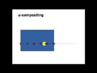
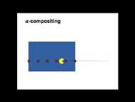

MEI Materials Library
MISS 2018 · MEC 2018 · MISS 2016 · MEC 2015 Winners · MISS 2014 · MEC 2014 Winners · MEC 2014-2015 EntriesMISS 2018 Talks
Entire MISS 2018 YouTube playlist- (01) - Andrea Vedaldi Universal, Unsupervised and Understandable Image Representations 1:19:40
- (02) - Daniel Rueckert Introduction into CNNs for medical imaging 1:14:40
- (03) - Daniel Rueckert Deep Learning for medical image reconstruction, super resolution and segmentation 1:17:27
- (04) - Trevor Darrell Adaptive and Explainable Artificial Intelligence 1:27:28
- (05) - Thomas Brox Dense correspondence estimation with deep learning and cross dataset generalization 1:34:22
- (06) - René Vidal Segmental Spatio Temporal Deep Networks for Discovering the Language of Surgery 1:05:24
- (07) - René Vidal Mathematics of Deep Learning part 2 1:06:22
- (08) - René Vidal Mathematics of Deep Learning part 1 45:44
- (09) - Michael Bronstein Geometric deep learning on graphs and manifolds 2:13:35
- (10) - Larry Zitnick The dark ages Object Recognition before Deep Learning 1:19:39
- (11) - Kevin Zhou Deep learning and beyond Medical image recognition, segmentation and parsing 1:15:17
- (12) - Julia Schnabel Medical Imaging meets Deep Learning Introduction and Motivation 25:05
- (13) - Julia Schnabel Medical image quality assessment using deep learning 43:34
- (14) - Ender Konukoglu Using deep learning as priors in generative models for medical image computing 56:31
- (15) - MISS 2018 6:01
MEC 2018 Materials
- Zach Eaton-Rosen; University College London. Using NiftyNet to Train U-Net for Cell Segmentation. (Winner!).
- Marlene Tahedl; University of Regensburg. BATMAN - Basic and Advanced Tractography with MRtrix for All Neurophiles. (Finalist).
- Soraia Figueiredo Paulo, Nuno Figueiredo, Joaquim Armando Jorge and Daniel Simões Lopes; INESC-ID, Champalimaud Foundation and Universidade de Lisboa. 3D Reconstruction of CT Colonography Models for VR/AR Applications using Free Software Tools. (Finalist).
- Golafsoun Ameri and Leah Groves; Western University. Tutorial for Developing Image-Guided Intervention Modules using 3D Slicer. (Finalist)
- Iman Aganj; Massachusetts General Hospital, Harvard Medical School. Basics of Image Registration.
- Soraia Figueiredo Paulo, Miguel Belo, Rafael Kuffner dos Anjos, Joaquim Armando Jorge, Daniel Simões Lopes; INESC-ID. Volume and Surface Rendering of 3D Medical Datasets in Unity.
- Fabian Balsiger, Alain Jungo, Yannick Suter, and Mauricio Reyes; University of Bern. Medical Image Analysis Laboratory (MIALab): An Educational Approach to Medical Image Analysis using Machine Learning.
- Eric Kerfoot; King's College London. Object-Orientation and Design Patterns.
- Yiming Xiao. Let's cook a realistic brain for science.
- Fabio Raman; University of Alabama at Birmingham. Semi-automated pipeline for neuroimaging PET/MR visualization and quantification.
- Anna Gebhard, Tobias Geimer, Mathias Unberath, Frank Schebesch, Mena Abdelmalek; Friedrich-Alexander-Universität Erlangen-Nürnberg. A Practical Guide to Statistical Shape Models Featuring Hands-on Examples in CONRAD.
- Andreas Maier, Vincent Christlein, Tobias Würfl, Katharina Breininger, Shahab Zarei; Friedrich-Alexander-Universität Erlangen-Nürnberg. Hinge Loss, Support Vector Machines and the Loss of Users.
- Katharina Breininger and Tobias Würfl; Friedrich-Alexander-University Erlangen-Nürnberg. How to build a deep learning framework.
MISS 2016 Talks
Entire MISS 2016 YouTube playlist- (01) - MISS 2016 Favignana Spot 3:15
- (02) - Alison Noble (University of Oxford, United Kingdom) 1:05:14
- (03) - Carsten Rother (Technische Universität Dresden, Germany) 1:14:48
- (04) - Carsten Rother (Technische Universität Dresden, Germany) 46:52
- (05) - William M. Wells III (Harvard Medical School and MIT CSAIL, USA) 1:23:47
- (06) - Ben Glocker (Imperial College London, United Kingdom) 59:38
- (07) - Nicholas Ayache (INRIA, France) 1:39:05
- (08) - Marleen de Bruijne (University of Copenhagen, Denmark and Erasmus MC - University Medical Center Rotterdam, The Netherlands) 1:10:32
- (09) - Marleen de Bruijne University of Copenhagen, Denmark and Erasmus MC - University Medical Center Rotterdam, The Netherlands 50:36
- (10) - Ben Glocker (Imperial College London, United Kingdom) 1:05:35
- (11) - William M. Wells III (Harvard Medical School and MIT CSAIL, USA) 31:35
- (12) - William M. Wells III (Harvard Medical School and MIT CSAIL, USA) 45:50
- (13) - Alison Noble (University of Oxford, United Kingdom) 1:14:15
- (14) - Daniel Rueckert (Imperial College London, United Kingdom) 57:31
- (15) - Daniel Rueckert (Imperial College London, United Kingdom) 48:12
- (16) - Max Welling (University of Amsterdam, The Netherlands) 1:13:38
- (17) - Raquel Urtasun (University of Toronto, Canada) 55:07
- (18) - Ben Glocker (Imperial College London, United Kingdom) 59:57
- (19) - Andrea Vedaldi (University of Oxford, United Kingdom) 1:27:14
- (20) - Raquel Urtasun (University of Toronto, Canada) 1:01:30
- (21) - Andrea Vedaldi (University of Oxford, United Kingdom) 1:04:22
- (22) - Max Welling (University of Amsterdam, The Netherlands) 1:12:43
- (23) - Menarini 2:30
MEC 2015 Winners
ID#4 - DWI and Microstructure

Maxime Taquet
1st Prize Expert Panel.
Maxime Taquet
1st Prize Expert Panel.
ID#5 - Epipolar Consistency of X-ray Images

Andre Aichert
1st Prize Popular Vote.
Andre Aichert
1st Prize Popular Vote.
ID#3 - Random walks in medical image processing

Mattias Heinrich
2nd Prize Expert Panel.
Mattias Heinrich
2nd Prize Expert Panel.
ID#2 - Understanding an MRI Pulse Sequence using a Guitar

Dr. Battista
Medical Biophysics as Western University
2nd Prize Popular Vote.
Dr. Battista
Medical Biophysics as Western University
2nd Prize Popular Vote.
MISS 2014 Talks
Entire MISS 2014 youtube playlist- (01) - Mike Brady (University of Oxford, UK) 1:12:58
- (02) - Polina Golland (Massachusetts Institute of Technology, US) 49:30
- (03) - Polina Golland (Massachusetts Institute of Technology, US) 41:56
- (04) - Nikos Paragios (Ecole Centrale Paris, France) 51:31
- (05) - Xavier Pennec (INRIA, France) 1:00:34
- (06) - Nikos Paragios (Ecole Centrale Paris, France) 53:49
- (06 Pt02) - Nikos Paragios (Ecole Centrale Paris, France) 25:57
- (07) - Guido Gerig (University of Utah, US) 1:00:41
- (08) - Xavier Pennec (INRIA, France) 1:05:03
- (09) - Guido Gerig (University of Utah, US) 53:00
- (10) - Herve Delingette (INRIA, France) 1:39:04
- (11) - Antonio Criminisi (Microsoft Research, Cambridge, UK) 59:01
- (12) - Antonio Criminisi (Microsoft Research, Cambridge, UK) 50:15
- (14) - Nassir Navab (Technical University of Munich, Germany) 1:12:57
- (13) - Tim Salcudean (University of British Columbia, CA) 48:00
- (15) - Tim Salcudean (University of British Columbia, CA) 47:18
- (16) - Nassir Navab (Technical University of Munich, Germany) 48:08
- (17) - Mike Brady (University of Oxford, UK) 1:10:51
- Miss 2014 - Medical imaging summer school
MEC 2014 Winners
ID3: Your friendly guide to human brain atlases.

1st place Expert Panel
Yiming Xiao and Ian Gerard
Montreal Neurological Institute, McGill University
1st place Expert Panel
Yiming Xiao and Ian Gerard
Montreal Neurological Institute, McGill University
ID9 - Singular Value Decomposition
2nd place Expert Panel
Xiao Huang, Xiao Xue, Judith Zimmermann, Piotr Wojewnik
Technical University Munich
2nd place Expert Panel
Xiao Huang, Xiao Xue, Judith Zimmermann, Piotr Wojewnik
Technical University Munich
ID13 - Statistics on Lie groups for Computational Anatomy

1st place Popular Vote
Nina Miolane, Bishesh Khanal
INRIA Sophia Antipolis
1st place Popular Vote
Nina Miolane, Bishesh Khanal
INRIA Sophia Antipolis
ID11 - Intraoperative Nuclear Imaging

2nd place Popular Vote
Asli Okur, Philipp Matthies, Jose Gardiazabal, Oliver Zettinig, Christoph Hennersperger, Richard Brosig, Nassir Navab
Technical University Munich, Johns Hopkins
2nd place Popular Vote
Asli Okur, Philipp Matthies, Jose Gardiazabal, Oliver Zettinig, Christoph Hennersperger, Richard Brosig, Nassir Navab
Technical University Munich, Johns Hopkins
MEC 2014 & 2015 Entries in Random Order
The entire MEC2014 playlist is available here.
ID#6 - Going with the Flow - How 3D Printing and Prototype Design can Fight Coronary Artery Disease.

Susann Beier
Susann Beier
ID1 - Motion Artifacts in Computed Tomography
Jerry Battista, Colin Versnick, and Kevin Jordan
Western University
Jerry Battista, Colin Versnick, and Kevin Jordan
Western University
ID2 - 3DMeshMetric video tutorial

Juliette Pera, Francois Budin, Tung Nguyen, Beatriz Paniagua
UNC-Chapel Hill
Juliette Pera, Francois Budin, Tung Nguyen, Beatriz Paniagua
UNC-Chapel Hill
ID4 - Manopt, a Matlab toolbox for optimization on matrix manifolds

Nicolas Boumal
Universite catholique de Louvain
Nicolas Boumal
Universite catholique de Louvain
ID5 - Sparsity-Based Regularization

Shadi Albarqouni
Technical University Munich
Shadi Albarqouni
Technical University Munich
ID7 - Mutual Information
Andrii Kravtsiv, Burcu Altinkaya, Jun Shen, Yuxiang Gong, Zhengyu Shan
Technical University Munich
Andrii Kravtsiv, Burcu Altinkaya, Jun Shen, Yuxiang Gong, Zhengyu Shan
Technical University Munich
ID8 - Ray Casting

Laura Flores Sanchez, Jihye Jang, Nicola Leucht, Tushar Upadhyah, Tao Ye
Technical University Munich

Laura Flores Sanchez, Jihye Jang, Nicola Leucht, Tushar Upadhyah, Tao Ye
Technical University Munich
ID10 - 5: 3D Craniofacial Quantification of Changes-Compute the Surface Distances using a Color Map
Nicole Pentis, Lucia Cevidanes, Antonio Ruellas, Vinicius Boen, Beatriz Paniagua, Francois Budin, Alexis Girault, Martin Styner, Steve Pieper
University of Michigan, University of North Carolina at Chapel Hill, Isomics Inc.
Nicole Pentis, Lucia Cevidanes, Antonio Ruellas, Vinicius Boen, Beatriz Paniagua, Francois Budin, Alexis Girault, Martin Styner, Steve Pieper
University of Michigan, University of North Carolina at Chapel Hill, Isomics Inc.
ID12 - Discrete Optimisation for Medical Image Registration

Mattias P. Heinrich
University of Lubeck, University of Oxford · More Info
Mattias P. Heinrich
University of Lubeck, University of Oxford · More Info

ID15 - Continuous Spatio-Temporal Atlases of the Asymptomatic and Infarcted Hearts

Pau Medrano-Gracia
University of Auckland
Pau Medrano-Gracia
University of Auckland